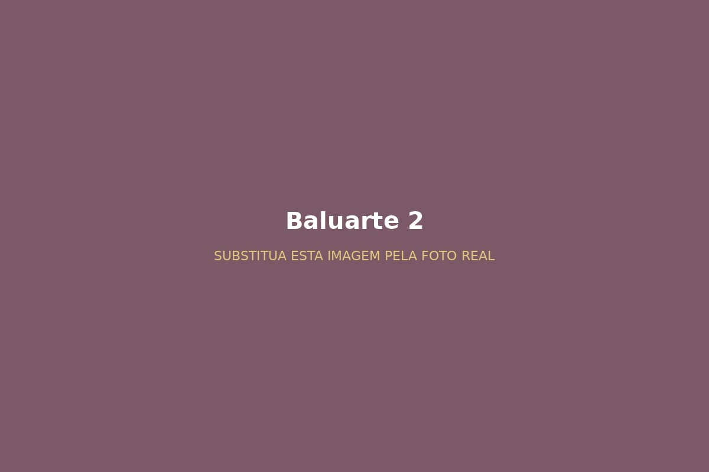

Acolhimento
Um espaço para chegar, conhecer pessoas e se sentir parte da comunidade.
Uma história de amizade, oração, serviço e fé que começou em 2007 e continua sendo escrita por muitas vidas.
O Grupo de Jovens Anjos da Fé nasceu de um sonho colocado no coração de Deus e da necessidade de unir os jovens para fortalecer e espalhar a fé.
Desde 03 de agosto de 2007, diferentes gerações ajudam a construir uma história marcada por fé, serviço, amizade, formação e novos recomeços.
O Anjos da Fé reúne jovens para viver a fé em comunidade, fortalecer vínculos, receber formação e colocar o chamado cristão em prática.
Um espaço para chegar, conhecer pessoas e se sentir parte da comunidade.
Momentos de oração, reflexão e formação para fortalecer a caminhada de fé.
Laços que ultrapassam os encontros e ajudam a construir uma verdadeira família.
Conheça a caminhada do Anjos da Fé desde sua origem até os diferentes momentos que ajudaram a construir a identidade do grupo.
O grupo de Jovens foi um sonho colocado no coração de Deus muito antes de ser concretizado, o grupo nasceu a partir dos vicentinos, em um pedido do Sr Vicente, onde ele viu a necessidade a partir da união de cada jovem que estava ali para espalhar e fortalecer a fé, com isso surgiu o nome “Anjos da fé” no dia 03 de agosto de 2007 onde aconteceu a primeira reunião de formação, reunindo cinco jovens.
Foi assim que os vicentinos participaram na formação do grupo, no início os filhos dos fiéis começaram a participar também. Após a primeira reunião, logo em seguida fizeram a formação oficial, a primeira formação de coordenadores, na época foram a Elisa, Adan e Vanessa, os primeiros coordenadores do grupo, com isso, as coisas começaram a caminhar, onde eles começaram a se aproximar da pastoral da juventude da paróquia, atualmente a missão jovem na qual o grupo pertence até os dias de hoje.
O nome “Anjos da Fé” surge e a primeira reunião de formação reúne cinco jovens.
Elisa, Adan e Vanessa assumem a primeira coordenação e ajudam a dar os primeiros passos do grupo.
O grupo começa a se aproximar da Pastoral da Juventude da paróquia, atualmente Missão Jovem, à qual pertence até hoje.
Houve dias em que a capela lotava e outros em que poucos jovens estavam presentes. O grupo continuou sustentado por coragem, doação e novos jovens.
O grito “Quem como Deus?”, criado nas Olimpíadas, marcou a história. A logo foi criada por Harrison e o grupo teve a oportunidade de proporcionar um retiro para os jovens do bairro.
Lucimara, com 15 anos, após receber o sacramento do Crisma, pode conhecer o amor e os sonhos de Deus para a sua vida através do grupo em 2008. Fez parte da coordenação do Anjos, junto com a Vandressa, o que ajudou ela a aprender e se desenvolver em sua vida profissional na faculdade e nos primeiros passos da maternidade. Hoje, casada, mãe de 6 filhos.
Yan teve seu primeiro contato com o grupo em 2011, já tinha recebido diversos convites. Após um retiro de Crisma, ele pôde experimentar o amor de Deus e decidiu seguir seu caminho com Cristo. Depois, através de um convite de um amigo, encontrou no grupo pessoas dispostas a viver o propósito de Deus. Foi coordenador do grupo e hoje é casado e tem 3 filhos.
O grupo passou por muitas coordenações ao longo da história:
Yan · Harrison · Luan · Jaque · Mariana · Lucas · Bruno · Rafael · Sérgio · Ana · Luany
Muitas tiveram renovações e muitas foram concluídas em apenas uma coordenação, mas todas na certeza de que tudo estava nos planos de Deus para o grupo, usando cada uma dessas pessoas para espalhar e viver o chamado de ser Anjos da Fé.
Nossos encontros são momentos de convivência, formação, espiritualidade e serviço.
Momentos dedicados à oração, reflexão e espiritualidade.
Reuniões com dinâmicas, conversas, partilhas e formação.
Ações e iniciativas voltadas para ajudar a comunidade.
Experiências especiais que fortalecem nossa união e espiritualidade.
Alguns momentos que fazem parte da caminhada do Anjos da Fé.
Espaço preparado para apresentar os oito baluartes do Anjos da Fé.
História e importância para o grupo.

História e importância para o grupo.
História e importância para o grupo.
História e importância para o grupo.
História e importância para o grupo.
História e importância para o grupo.
História e importância para o grupo.
História e importância para o grupo.
Se você é jovem e deseja conhecer o grupo, fazer novas amizades e viver momentos especiais de fé e comunidade, venha participar com a gente.